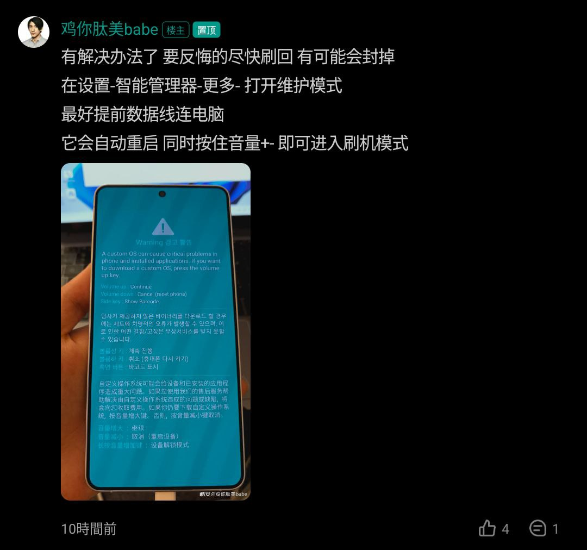
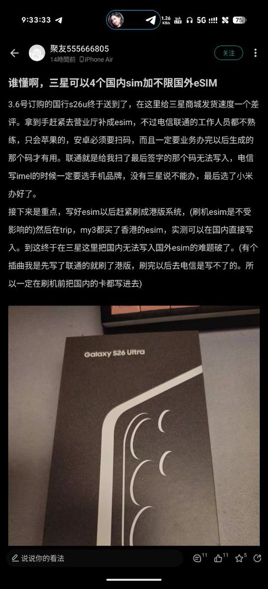
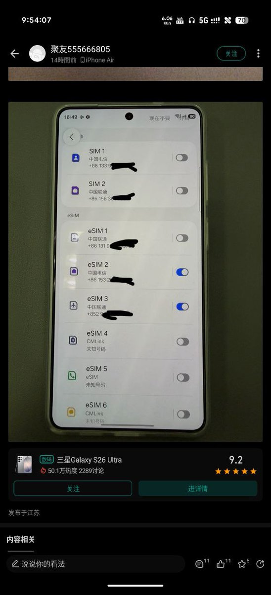
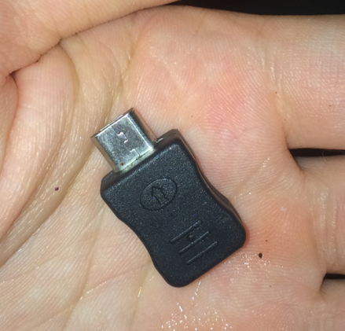
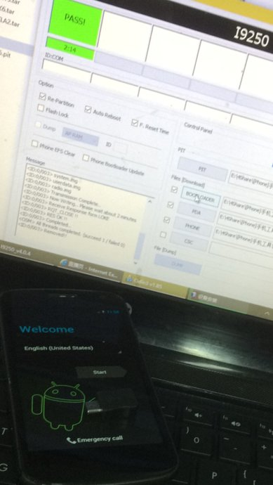

酷安网友实测，三星国行可以在写满2张国内特供eSIM后，可通过Odin刷入港版系统，之前写的所有eSIM都会保留。刷港版有满血GMS但无法使用国内交通卡等特色功能，其中包括拒绝写入国内特供eSIM。
猜测三星为了封锁这个中国大陆版（国行）刷港澳台ROM解除eSIM地理限制的漏洞才封堵的。目前还有效的方法见p1，提前连接好数据线，在设置-智能管理器-更多-打开维护模式，自动重启后同时按住音量加减（±）进入Odin模式。
请务必备份好刷机所用的固件文件，一旦系统更新到One UI 8.5将进不去Odin模式，已经刷了港版系统并更新的用户将只能通过售后回退到国行。

猜测三星为了封锁这个中国大陆版（国行）刷港澳台ROM解除eSIM地理限制的漏洞才封堵的。目前还有效的方法见p1，提前连接好数据线，在设置-智能管理器-更多-打开维护模式，自动重启后同时按住音量加减（±）进入Odin模式。
请务必备份好刷机所用的固件文件，一旦系统更新到One UI 8.5将进不去Odin模式，已经刷了港版系统并更新的用户将只能通过售后回退到国行。





三星 One UI 8.5 开始禁用 Odin 模式
千言万语汇成一句话：狗日的三星手机，你什么时候倒闭啊？ https://t.co/zKjud3TR5M https://t.co/EaWbdE14kn
千言万语汇成一句话：狗日的三星手机，你什么时候倒闭啊？ https://t.co/zKjud3TR5M https://t.co/EaWbdE14kn